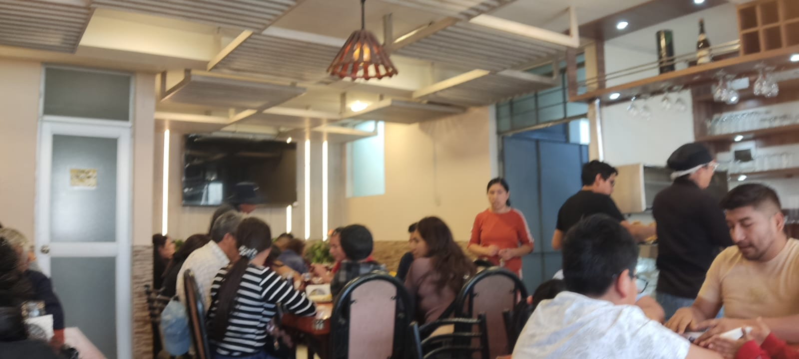
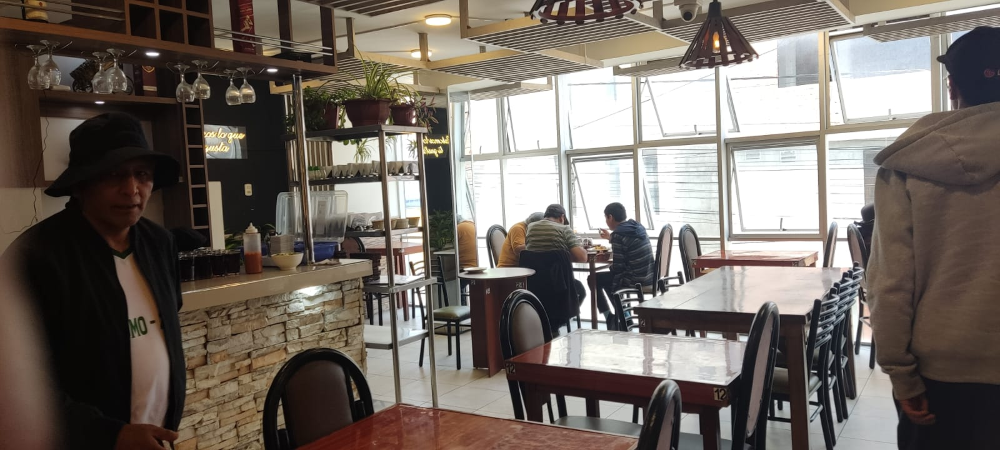
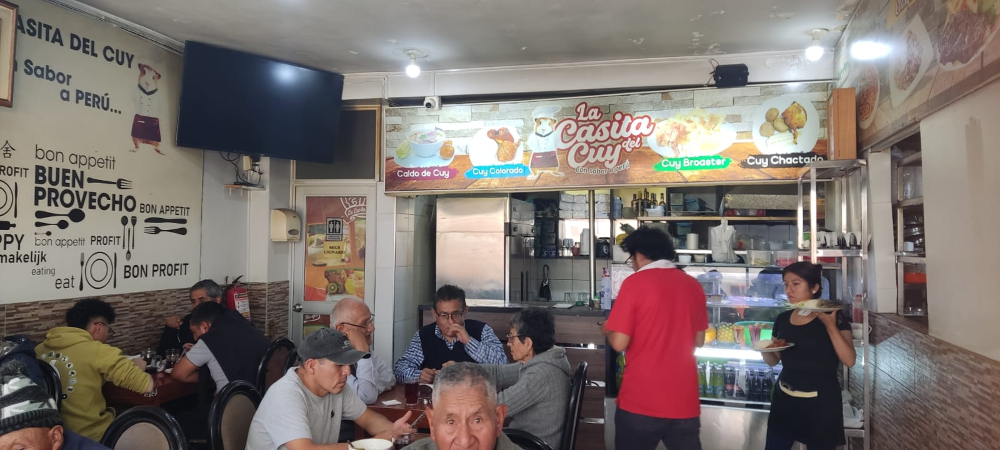
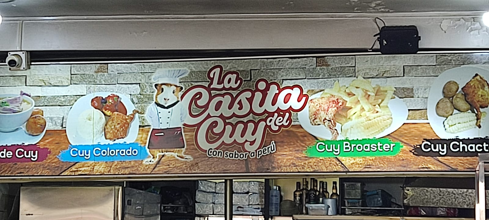
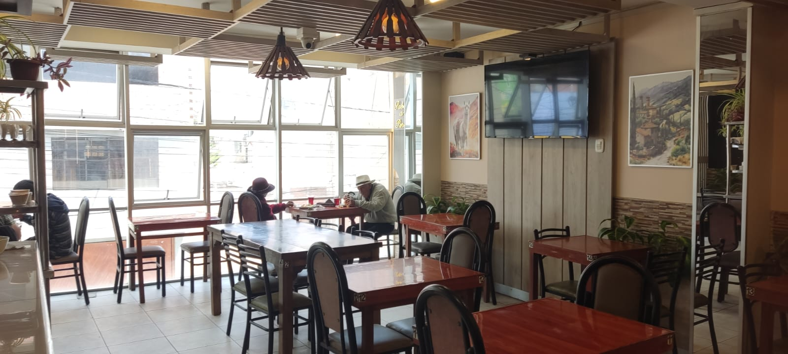
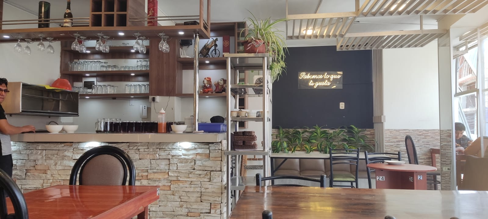
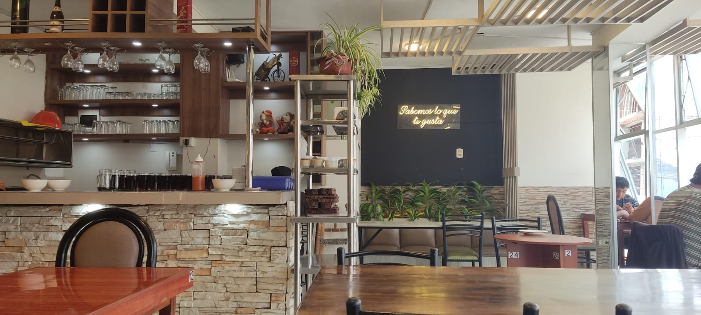
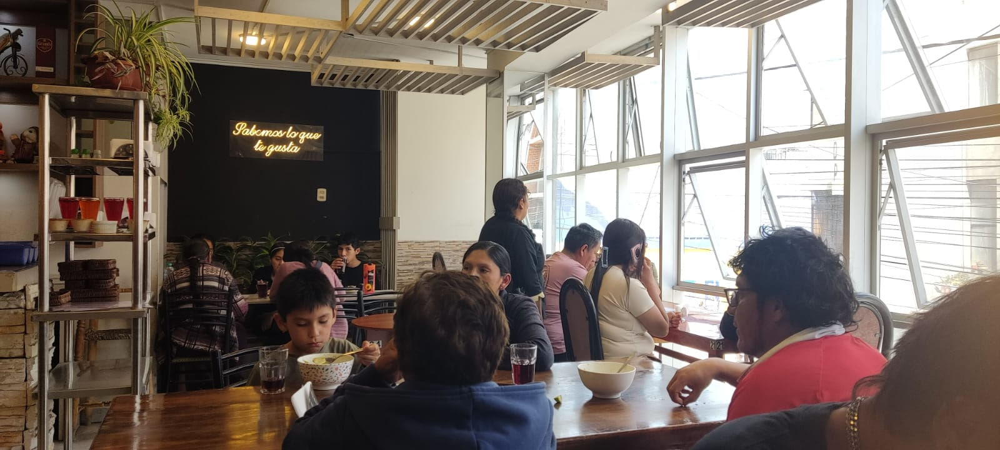

SABOR CON HISTORIA · DESDE EL CORAZÓN DEL PERÚ
Tradición que
se comparte.
Sabores de nuestra tierra, preparados con cariño y servidos para disfrutar sin apuro.
Explorar la cartacariñoEN PERÚ

Un lugar para sentirse en casaNUESTRA CASA, TU MESA
Una receta que
nos une.
Celebramos la cocina peruana y los momentos alrededor de la mesa. Rescatamos sabores de siempre y los compartimos con el cuidado de una comida hecha en casa.
Con cariño, La Casita del Cuy
Conoce nuestra historia
Tradición que se comparte¿CÓMO NACE LA CASITA DEL CUY?
Nuestra historia
La Casita del Cuy comparte los sabores de la gastronomía tradicional peruana, con platos preparados con ingredientes de nuestra tierra.
Queremos ofrecer un ambiente acogedor donde familias y amigos puedan reunirse, disfrutar de una buena comida y compartir momentos especiales.
Conoce nuestra misión y visión
Enfocados en ser mejores para tiNUESTRA ESENCIA
Misión
Ofrecer una experiencia gastronómica basada en los sabores tradicionales del Perú, con atención amable y un ambiente acogedor.
Visión
Compartir la gastronomía tradicional peruana, destacando la calidad de nuestros platos, la atención y nuestras costumbres culinarias.
Conoce nuestras especialidades
Tradición que se comparteDESCUBRE NUESTRA PROPUESTA GASTRONÓMICA
Nuestras especialidades
Sabores de nuestra tierra
- Caldo de cuy
- Cuy colorado
- Cuy broaster
- Cuy chactado
NUESTRA CASA
Un espacio para compartir




La comida sabe mejor
cuando se comparte.
HECHO PARA DISFRUTAR JUNTOS
TE LEEMOS CON GUSTO
Hablemos
un ratito.
¿Tienes una pregunta o un comentario? Escríbenos y te leeremos con gusto.
Ir a contacto¿Ya sabes qué vas a pedir?
Elegir mis platos